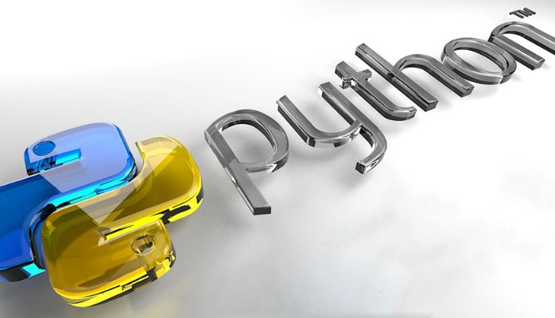
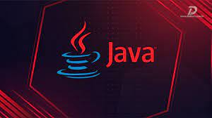
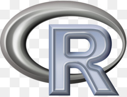

Home
Musica
Aula
Contato

Python é uma linguagem de programação de alto nível, interpretada de script,
imperativa, orientada a objetos, funcional, de tipagem dinâmica e forte.
Foi lançada por Guido van Rossum em 1991.

Java é uma linguagem de programação orientada a objetos desenvolvida na década de 90
por uma equipe de programadores chefiada por James Gosling, na empresa Sun Microsystems.

C# é uma linguagem de programação, multiparadigma, de tipagem forte, desenvolvida pela
Microsoft como parte da plataforma .NET. A sua sintaxe orientada a objetos foi baseada no
C++ mas inclui muitas influências de outras linguagens de programação, como Object Pascal e,
principalmente, Java.

R é uma linguagem de programação multi-paradigma orientada a objetos, programação funcional,
dinâmica, fracamente tipada, voltada à manipulação, análise e visualização de dados.
Foi criado originalmente por Ross Ihaka e por Robert Gentleman no departamento de Estatística da
Universidade de Auckland, Nova Zelândia.